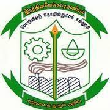

RVS';">Explore detailed career progression paths for various specializations in civil engineering. Each roadmap includes skill development, software proficiency, and industry readiness guidelines.
Design and analyze structures to ensure safety, stability, and durability. Work on buildings, bridges, and other infrastructure projects.
Oversee construction projects from planning to completion, ensuring quality, safety, and adherence to schedules and budgets.
Supervise construction activities on-site, ensure quality control, manage labor, and resolve technical issues during execution.
Develop project schedules, monitor progress, and ensure projects are completed on time and within budget.
Manage costs and contracts for construction projects, prepare estimates, bills of quantities, and handle tendering processes.
Analyze soil and rock mechanics to design foundations, earthworks, and retaining structures for construction projects.
Design and maintain transportation systems including roads, highways, railways, airports, and traffic management systems.
Design and manage water-related infrastructure including dams, irrigation systems, water supply networks, and flood control systems.
Career paths in public sector undertakings, government departments, and infrastructure development authorities.